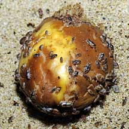
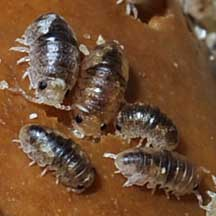
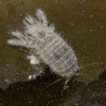
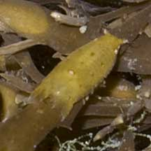
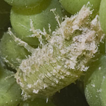
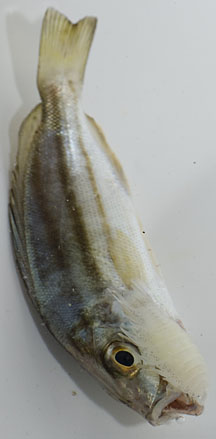
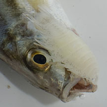
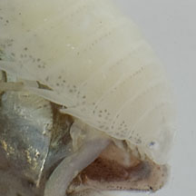
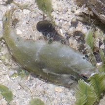
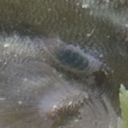

|
|
| sea slaters text index | photo index |
| Phylum Arthropoda > Subphylum Crustacea > Class Malacostraca > Order Isopoda |
| Marine
isopods Order Isopoda updated Mar 2020 Where seen? These tiny segmented animals are sometimes seen our shores, often swarming in numbers at low tide over rotting fruit or dead matter. The most commonly seen isopod on the beach are sea slaters (Ligia sp.) or sometimes called sea cockroaches although they are not insects and look nothing like cockroaches (if you ask me). What are isopods? They are crustaceans like crabs and prawns. There are about 4,000 described species of isopods that live in the sea. Some are found in freshwater, and some are terrestrial (these are usually called wood lice or pill bugs). Most marine isopods are tiny (5-15mm long). But one deep sea isopod Bathynomus giganteus can grow to 40cm long! Many may be parasites on other marine creatures. |
 Some unidentified beach isopods swarming over rotting fruit. East Coast, Aug 09 |
 |
| Features: 1cm or less.
Their segmented body is flattened downwards (instead of sideways for
amphipods such as amphipods)
with legs that are more or less similar. Isopoda meaning 'same feet'
while Amphipoda means 'different feet'. Their eyes are NOT on stalks.
Some can give a nasty bite. What do they eat? Beach isopods are scavengers, nibbling on whatever recently died on the rocky shore. At low tide, they swarm over the beach looking for the recent dead. Some isopods found in the mangroves nibble holes in dead wood and can cause much damage to wooden man-made structures. |
|
 Sisters Island, Jan 11 |
 Sisters Island, Jan 11 |
 Cyrene Reef, Jul 11 |
| Blood-sucking isopods: Some isopods are parasites of fishes. These usually have specialised piercing mouthparts for sucking blood and terminal hooks on their limbs for clamping onto their fish host. Some parasitic isopods attach to the gills of shrimps, feeding on the blood. |
|
 Fish isopod. Chek Jawa, Aug 13 |
 Chek Jawa, Aug 13  |
 Fish isopod.  Terumbu Pempang Tengah, Apr 13 |
| 'Tongue-biter' isopods: Some isopods replace the tongue of a fish! From the Raffles Museum of Biodiversity Research "a parasitic isopod living within the mouth of the spotted scat. It has eaten away the scat's tongue (!) and has lodged itself in the tongue's place. No one really knows what the isopod/tongue lives off. Some studies suggest that they feed off the animals the fish eats; other studies suggest that are blood drinking mouth leeches within the fish." |
| Marine isopods on Singapore shores |
On wildsingapore
flickr
|
| Other sightings on Singapore shores |
Links
|